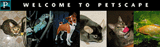

Just what is the sincerest
form of flattery? Imitation, yes. Parody...well, maybe. As made evident by the collective works of Mel Brooks, a parody
really only works once something has become an institution. With the transient, quick-pulsed nature of the Web, it
hasn't taken long for a few sites to become so popular that perhaps they really do fall in the "top 5%." For instance
there's Yahoo!, which even veteran Web users access daily, even if not all of them will admit it. There's The Spot,
which was voted Cool Site of the Year for 1995. And don't forget the irrecusable e-zine suck, our daily dose of cynicism.
There's a good reason everyone on the 'net knows these sites. They're either places we love to use or places we love to
hate. No matter what their classification, they've risen above the rest of the dreck into a higher echelon -- those sites
popular and powerful enough to warrant some good-natured, or not-so-good natured fun at their expense. For suck,
there's sock and blow. The Squat mocks The Spot. What's Snooze lampoons the NCSA's What's New pages. Some of
the sites, such as sock, are little more than a one-shot punch line, while others such as blow have developed into sites
that could stand alone on their own merit.
So what prompted all this mimicry? IU decided to take a peek behind the scenes with some of these site spoofers.
REAL THING: The Spot,
http://www.thespot.com
PARODY: The Squat,
http://theory.physics.missouri.edu/~georges/Josh/squat/
WHY IT DESERVES TO
BE PARODIED: The physically beautiful, vapid main characters begged to have their perfections made imperfect by
this shameless lampoon of the insipid storyline.
HOW THE PARODY
COMPARES: Took fab beachfront lifestyle and turned it into an endless episode of Roseanne set in a trailer park.
IRONY FACTOR: The trailer park people write better.
Suspiciously similar to a combination of Melrose Place coupled with The Real World with a dash of Baywatch
cheesecake, The Spot offers 'net users the daily episodic ventures of 20-somethings in a wild and crazy, inner-reflective
Web world that we all read because we can relate, man. Oh yeah, and there's lots of butt shots. What more could we ask
for?
Enter The Squat, the cozy life and times of four down-and-out folk livin' in a lovely double wide. "The Spot
seemed a bit too high and mighty and needed to be wrestled down in the mud with the rest of us," says The Squat's
Lynn Kyle, who plays Valvoline (currently, the only woman in the crowd). "The Squat seemed to hit The Spot
perfectly."
Greg Zguta attributes The Squat idea to Josh Hancik, who admired The Spot when it launched ("Boy, were we
naive!" Zguta says). The pair, along with Georges Saab, Beth Kopine and Betsy Smith began the spoof, says Zguta, as a
"sort of summer hobby." (Kopine and Smith left the trailer last summer; Kyle moved in last November.) But then the
The Squat started to develop its own cult following, proven in its active bulletin board section. Their little hobby also
attracted a lot of attention from the media and Web users. Zguta estimates The Squat has received more than 100,000
hits since last July, when the site was added to Netscape's What's New and Yahoo's Cool Links.
E-mail pours in from fans and dissenters alike. "About once a month, I tend to get a proposal," quips Kyle.
"Sometimes even for marriage."
REAL THING: suck, http://www.suck.com/
PARODIES: blow,
http://www.deconstruction.com/blow/
sock, http://www.public.coe.edu/~mouser/derbis/sock/sock.html
WHY IT DESERVED TO BE PARODIED: The daily doses of cynicism and criticism are funny as long as you aren't
mentioned.
HOW THE PARODIES COMPARE: Blow takes the cynicism and points it in an interesting direction. Sock just points.
IRONY FACTOR: Sock, or "suck for
dummies" really may be necessary for
some Web surfers.
HIGHLIGHTS: Blow's rant about the Sucksters hanging out on AOL.
A friend of ours told us that he liked suck because it was double-spaced. Luckily for its impersonators, this makes suck
easy to emulate. Steal a bit of code and you've got an instant suck-alike.
blow's creator takes the cynical tone of suck and, using his own wit, creates an intriguing set of commentary on
topics ranging from censorship to Java security flaws. While it may have started as a parody, blow stands up
on its own thanks to its humorous biting
attitude toward technology and those who use it.
sock, on the other hand, proudly bills itself as "suck For Dummies," and goes on to provide newbies with step-by-
step
instructions for accessing and understanding its namesake. Jason Kottke, sock's
founder, says the "For Dummies" series of books from IDG Publishing were his first inspiration, especially since some
of their offerings such as CD-ROMs For Dummies seemed so obviously useless. "Suck was an easy target, since it is
nothing more than an article and a few pictures," Kottke says. "Who needs an explanation for that?"
Well, obviously a few people do; even the folks who read suck. When sock was featured on suck on March 14 issue
(archived at www.suck.com/dynasuck/96/03/14/), the site received more than 1,700 hits that day.
REAL THING: Netscape, http://www.netscape.com
PARODY: Petscape, http://www.hisurf.com/petscape/
WHY IT DESERVES TO BE PARODIED: While Netscape has the most full-featured browser, its site is butt-ugly.
HOW THE PARODY COMPARES:
In content, Petscape rules pet resources the way Netscape rules Web resources. Petscape is much cuter, though.
IRONY FACTOR: Netscape highlighted Petscape on its What's New page, then turned around and filed legal
complaints against the site for trademark infringement.
HIGHLIGHTS: The typos in the stiff legal letter sent from Netscape, found on Petscape's home page.
 Petscape, a site dedicated to pets and pet lovers created by the "Coconut Boyz," is chock-full of animal pages,
resources, links and news offered in a format that matches Netscape's home page almost to perfection. And if you're a
pet lover or owner (yes, even of odd pets, such as sea monkeys or ant farms), this site should be at the same level of
priority as Netscape in your bookmarks.
Petscape, a site dedicated to pets and pet lovers created by the "Coconut Boyz," is chock-full of animal pages,
resources, links and news offered in a format that matches Netscape's home page almost to perfection. And if you're a
pet lover or owner (yes, even of odd pets, such as sea monkeys or ant farms), this site should be at the same level of
priority as Netscape in your bookmarks.
However, Petscape's experiences outline why creating a parody isn't all fun and similar source coding.
"We had the site up for about four months and then one day we got an e-mail from a www.petscape.com telling us
to stop listing our site as Petscape since we would be in violation of some sort of copyright," says Scott Yoshinaga, the
site's creator. "We changed our site name to the Original Petscape and we stopped listing (it in places on the Web).
But in three days we were listed on Netscape's What's New pages. I am pretty sure the petscape.com people were not
too thrilled, but we honestly had nothing to do with it."

Netscape's lawyers started their legal posturing in April. If Yoshinaga complies, you'll see a dramatically different
site by the time this issue hits the newsstand. "[Netscape] asked us to redesign our site and name because it is
infringing on their GUI [graphical user interface] and name. We have till May 10, 1996, to comply. It was a very
formal letter and not threatening in any way. I suppose we now must change it all."
REAL THING: NCSA's What's New,
http://www.ncsa.uiuc.edu/SDG/Software/Mosaic/Docs/whats-new.html
PARODY: What's Snooze?, http://www.c3f.com/whasnooz.html
What Snooze II, http://www.c3f.com/snooze2.html
WHY IT DESERVES TO BE PARODIED: Everything is new, so why bother?
HOW THE PARODY COMPARES: Both sites have comparable graphic flair for
the non-dramatic.
IRONY FACTOR: The mock sites listed are 10 times better than most real sites.
HIGHLIGHTS: Make sure you read the URLs carefully.
Tired of reading about what's new on the Web? Too bad. What's Snooze introduces its site with the disclaimer: "This page contains a list of links to the hundreds of thousands of new Web pages that have been created and announced in the last 10 minutes. The list is updated each 11 minutes, and the previous listings (now ancient history) are immediately removed and placed on our inaccessible archives server." This site's so hot, the author had to create a second version, What's Snooze II. The double farce highlight treasures such as made-up sites "Learn Desperanto in a Week"(that's the universal language of despair) and "Better Faster Be$t$eller$" (a site devoted to fictional books such as Al Franken is From Mars, Deepak Chopra is from Venus, by William S. Burroughs).
REAL THING: HotWired, http://www.hotwired.com
PARODY: UnderWired, http://www.covesoft.com/underwired/
WHY IT DESERVES TO BE PARODIED:
Oh, come on. If you really need to be told, you are just sooo uncool.
HOW THE PARODY COMPARES: HotWired looks down its nose;
UnderWired lifts and separates.
IRONY FACTOR: Marci and Bill
admit that they're clueless.
HIGHLIGHTS: Its "Fetid" section -- Techno-lust for things that smell really, really bad.
Who would deign to mock the mighty HotWired? Marci Mansfield-Fickes and Bill Pulver would, and they do in their
"lighthearted but pretentious" UnderWired. The site features humorous and biting articles such as "Type Design vs.
Legibility -- Who really gives a shit?" and its Overtired/UnderWired section (worth it if only to view the accompanying
clever graphics). Mansfield-Fickes and Pulver, who both work for a design firm near Philadelphia, were inspired to
spoof the site after attending a lecture by HotWired's two designers shortly after its launch. "Two things immediately
impressed us. One, the incredible potential the Web had as a communications tool that we could immediately hook
into. And two, how incredibly pretentious and taken with themselves [the HotWired designers] were."
The best historical feature about UnderWired may be how it got its name. "We were in a meeting in the conference
room one afternoon at work," explains Pulver. "You see, the conference room is kind of poorly ventilated. That
particular summer day was getting pretty warm. Marci found herself feeling a little light-headed, and when the chest
pains started, she had pretty much convinced herself she was having a heart attack.
"Making the usual excuses, she absented herself and went straight to the emergency care unit, where the attending
physician told her that her symptoms were not a heart attack, but a combination of heat, poor ventilation and pressure
on her rib cage caused by her underwire bra.
"Not being real bright, Marci comes back to the studio and tells me this." Needless to say, UnderWired was a natural
name choice, and HotWired a natural target. The rest is yet history.
REAL THING: 2(x)ist Underwear Catalog, http://www.digex.net/2xist/catalog.html
PARODY: 2(b)Furry, http://members.aol.com/timberwoof/2bFurry/index.html
WHY IT DESERVES TO BE PARODIED: It's too sexy for its shirt.
HOW THE PARODY COMPARES:
It's too sexy for its fur.
IRONY FACTOR: It appeals to much
the same audience.
HIGHLIGHTS: Hmmm. It's hard to choose
between the Y-back thong and Contour Pouch Brief.
While we've never known anyone to actually order anything from the 2(x)ist Web site, we do know people who like to
gawk at the pictures, especially that nice fellow in the Y-back thong. But while the pictures of all those ribbed tummies
and tight butts may entice, Michael "Timberwoof" Roeder found the page got old quickly since it seemingly hasn't
changed since its inception.
So during a rush of spare time ("meaning I was unemployed," he clarifies), Roeder was hit with the idea to create
2(b)Furry. "It was then a matter of putting the images together, getting some of my stuffies to agree to be
photographed, manipulating images from the 2(x)ist site, and writing the HTML." Poof, we've now got a resource for
teddy bear underwear and the bear in the Y-back thong should not to be missed. Bear in mind, the site takes credit card
orders, but accepts only Furrican Express, MasterFur, FURA or Discofur.
REAL THING: Cool Site of the Day, http://cool.infi.net
PARODY: The Same Site of the Day, http://www.pnx.com/falken/samesite.html
WHY IT DESERVES TO BE PARODIED: Made everyone want to espouse what they thought was cool by setting up
similar sites.
HOW THE PARODY COMPARES:
It looks the same all the time, just
like the original.
IRONY FACTOR: That the Same Site of the Day is actually cool.
HIGHLIGHTS: Nads.
Infinet's Cool Site of the Day may not be the most parodied site on the Web, but it certainly wins the prize for most imitated. That's what bugged "Professor" Falken, a 17-year-old high school senior, who decided to make fun of all the lemming-like copycats. So late one night, Falken created The Same Site of the Day. Since the award goes to the same site every day, it's a perfect low-maintenance site. (Actually, it's no-maintenance. "Even if I wanted to change it, I can't," points out Falken). Falken claims he even forgot about it after he put it up, until he started getting e-mail about the site, then found it was listed at Yahoo!, the Point and Magellan. It's even been chosen as a "site of the day" on several occasions, which Falken finds ironic, since he's getting coverage from the very people he's making fun of.
REAL THING: Yahoo!
www.yahoo.com
PARODY: Gilmoo!
http://efg.mit.edu/
Yippee!
http://www.awod.com/gallery/rwav/ctyner/
Yecch!!!
http://www.yeeeoww.com/yecch/yecchhome.html
WHY IT DESERVES TO BE PARODIED: Its "cool" icon looks like a black bra that only Kate Moss could fit into.
HOW THE PARODIES COMPARES: Um, they don't. They're all just out there searching for something that can't be
found.
IRONY FACTOR: One site is thinking of suing Yahoo, not the other way around.
HIGHLIGHTS: Yecch!!!'s Rush Limbaugh search engine.
As one of the first major directional elements on the Web and arguably one of the most influential sites created (see
"The 11 Sites that Revolutionalized the Internet," IU #6), Yahoo! has continually evolved in order to stay also one of
the most popular Web destinations.
All of the lampoons of Yahoo! have taken on the familiar Yahoo! look, with a bit of a difference in the category
structure.
Take Gilmoo!, based on the long-time 'net username of its author, Massachusetts Institute of Technology student
Eric Gilmour. Gilmoo! points to sites of Gilmour's interest and offers insight into the author, including a resume and a
personal photo menagerie.
Why go to the trouble of Yahooing his site? "It was really just an overnight thing," Gilmour says. "I was
procrastinating, studying for a Linear Algebra midterm, and Gilmoo! was born." (If we had to choose between coding
and linear algebra, we'd do the same.) Online and paper magazines have covered his creation. It's also one of the sites
featured in the Riddler scavenger hunt.
Another Yahoolian site, Yippee!, from the mind of Adam Tyner, was inspired by Yahoo!'s easy-to-navigate
organizational structure. Overwhelmed by the amount of info in his site -- Tyner collects data on He-Man and the
Masters of the Universe, Yoo-Hoo, and Killer Tomatoes among other wide-ranging topics -- he decided to change the
look of his site from a straight-list format. He liked Yahoo!'s structure, "so I copied it." At press time, Tyner was now
considering creating a mock surf shop and a Yahooligans! parody soon.
However, the site most closely resembling the Yahoo! searchable structure and categories is the relatively new
Yecch!!! site, one of the many parody sites produced by Yeeeoww! Digital Lampoon master Pat Campbell. He
attributes the entire lampooning venture to "reading too much Mad magazine when I was young." Yecch!!! not only
looks like Yahoo!, but it finds the worst possible stuff on the Web and offers viewers the choice to browse around or
search for topics of interest. Campbell adds that his team is dedicated to the site, "and take great pains to come up with
a stinkin' Web Site o' th' day every single stinkin' day." His fine collection of Web wretchedness receives roughly 500
hits a day. At one point, Yecch!!! was on Yahoo's cool list, but it's since been unceremoniously removed. This snub has
stumped and angered Campbell. "Needless to say, we're gonna sue their ass," he says.